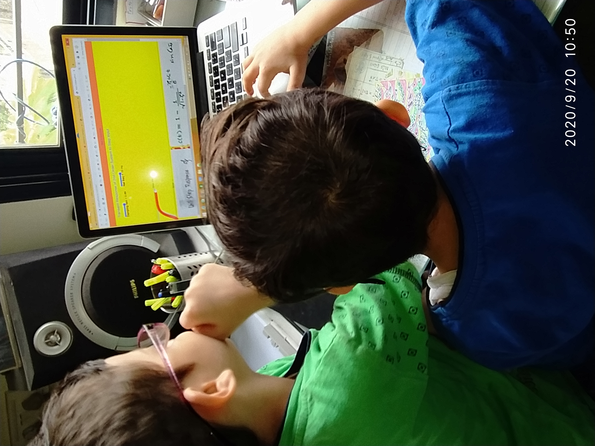

srbee's pages on GitHub
Tune ( Tone for Tuning TX)
AI Tools
Links to Web SDRs
DC Offset in Fault Current in Desmos
Unit Step Response of 2nd Order System in Desmos
Capability Diagram of a Synchronous Turbo-Alternator... 24 June 2021
100 Click Cards
ANSI/IEEE Standard Device Numbers
Routh Stability Criterion using Routh Table
Mask Detection Using Machine Learning
Ferranti Effect
Rotating Magnetic Field
Bhaji-pala
Kaprekar Number
Perlin Noise
Chebyshev Polynomials of First Kind
Transfer of Real and Reactive Power In a Power System
Step Response of Second Order System
Morse Code
555 Based Audio Oscillator With Sound
Travelling Waves on Open Ciricuited Transmission Line
DFT Zoo
Symmetrical Components Live
Power System Protection Quiz
Decaying dc offset in fault current
Sketch Signal See DFT
DFT Calulation from list of comma seperated samples
Inverse OC Relay Characteristics
Towers of Hanoi
Taylor Series for sin(x): Experimenting with number of terms
Collatz Sequence